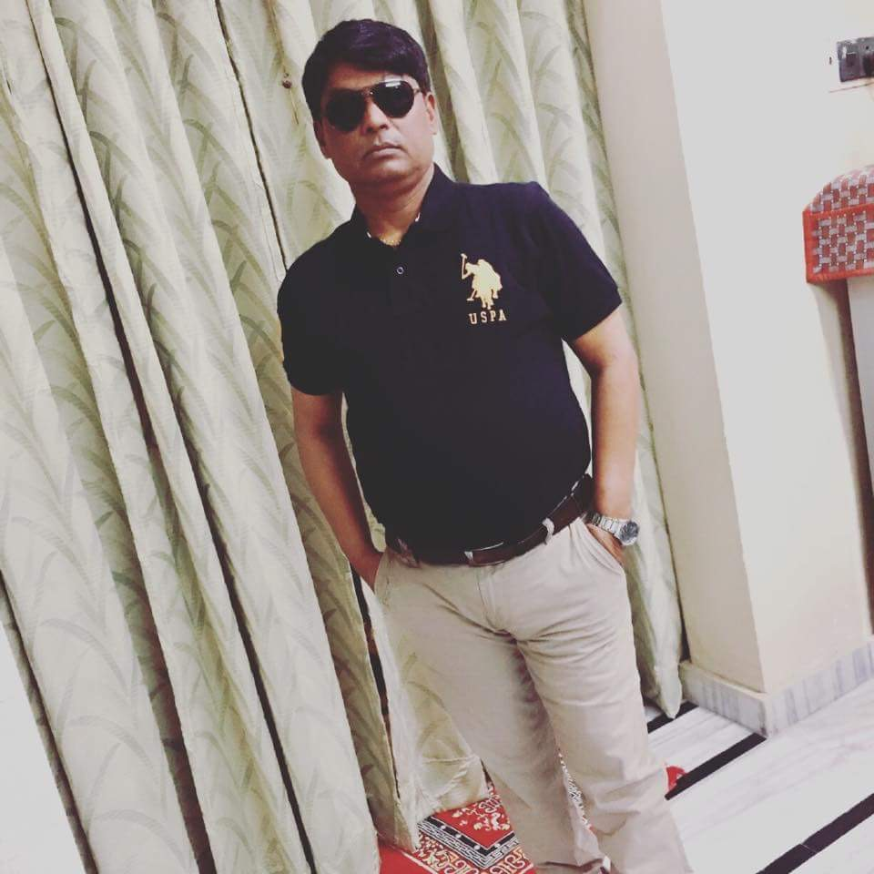

| 
|
MUKESH DIWAKAR |
Born in a small village of Firozabad(asfabad) on 31st July 1965.He is a son of Kunwar Pal Singh and Jal Devi.
His degrees are as follows:
He is having two kids and one wife.
HE GOT MARRIED ON 12 FEBURARAY 1992 to Nirmala Devi.
HIS SOME OF THE HOBBIES ARE:
His annual income is still unknown even to his smartest kid KUNAL.
He is having one bike(pulsar 150)and a Car(swift).